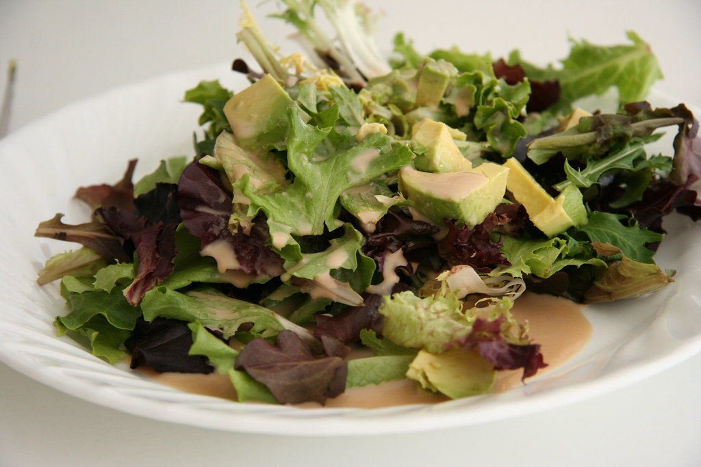

Simple Salad

Source: Creative Commons
Refresh your palatte with this simple, yet tasty, salad!
Not every dish needs to take a long time to prepare. Ready in minutes, this salad is a great afternoon snack.
Recipe
Ingredients
Assemble the following:
- A container of pre-washed spring mix
- Avacado slices
- Shredded cheese of your choice
- Chopped vegetables of your choice
- Salad toppings of your choice
- Salad dressing of your choice
Prep
- Place two handfuls of spring mix in the large mixing bowl
- Add avacado slices, vegetables, and other salad toppings of your choice
- Add salad dressing of your choice, to taste (1-2 tbsp suggested)
- Cover with lid, then shake salad to mix ingredients together
- Serve using salad tongs, and enjoy!